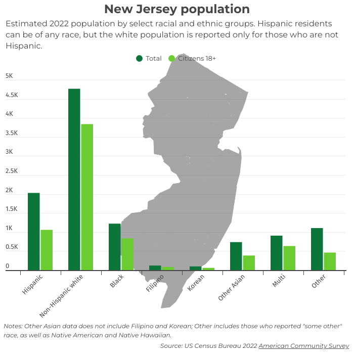
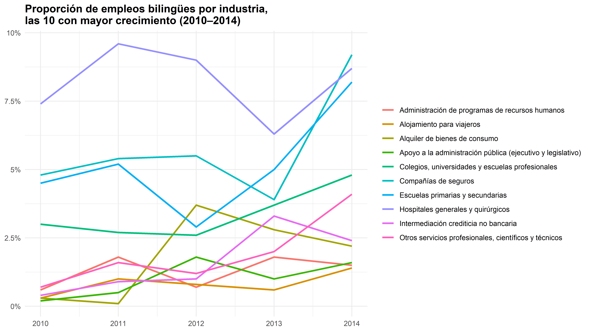
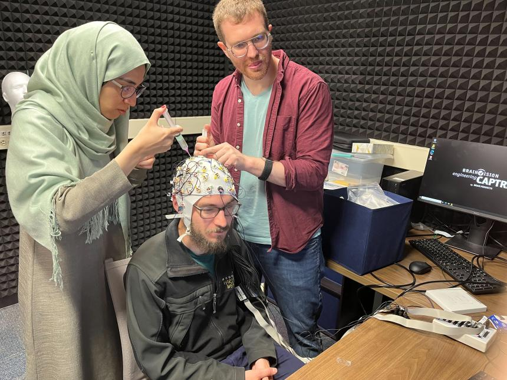
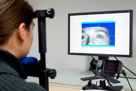
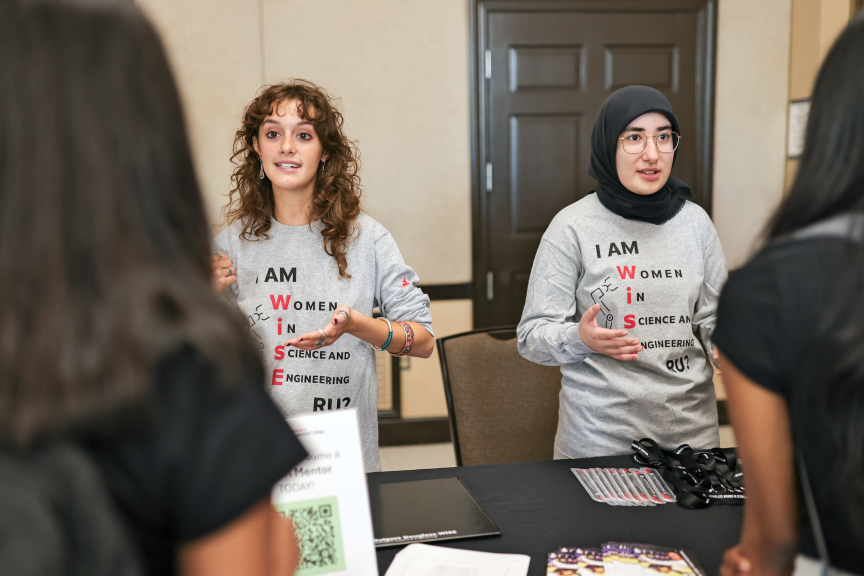
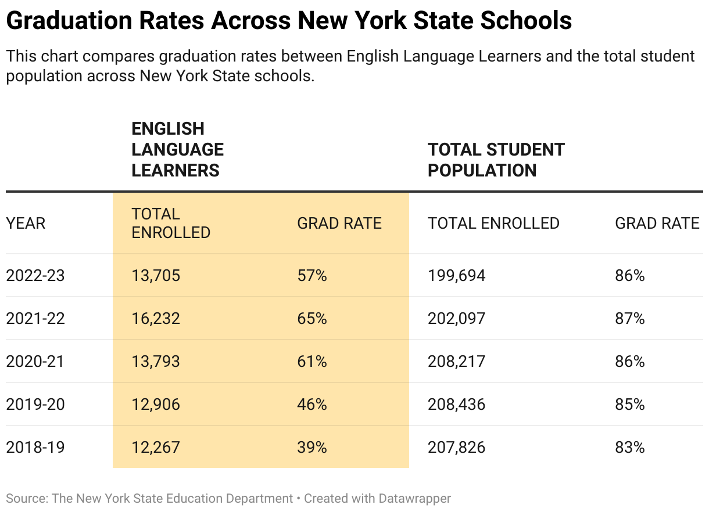
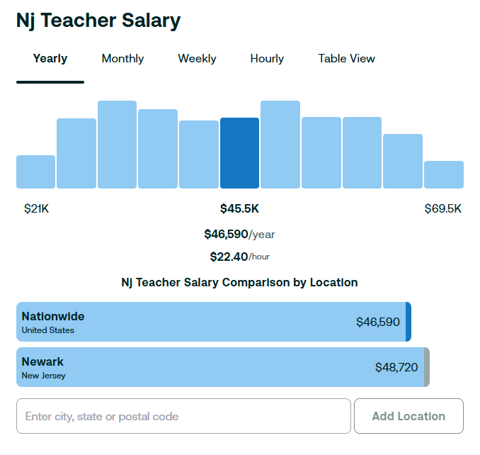
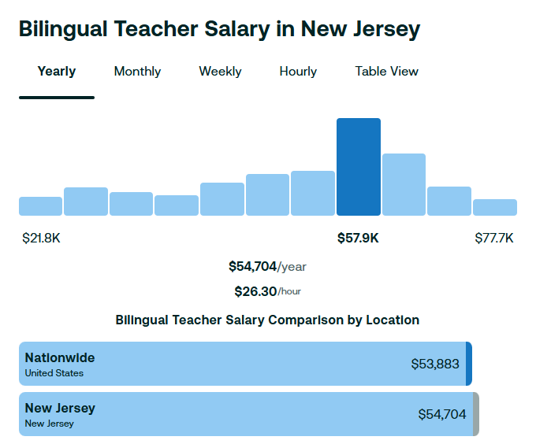

| Empresa | Anuncios de empleo bilingües | % de anuncios |
|---|---|---|
| Bank of America | 560 | 19.9% |
| H&R Block | 164 | 22.3% |
| AT&T | 137 | 12.1% |
| Wells Fargo | 119 | 7.9% |
| Promoworks | 101 | 7.1% |
| State Farm Insurance Companies | 79 | 24.5% |
| Rent-A-Center | 75 | 24.1% |
| Crossmark Incorporated | 65 | 21.5% |
| Bayada Home Health Care | 55 | 2.4% |
| Rutgers, the State University of New Jersey | 49 | 2.1% |
Ser bilingüe brinda mejores oportunidades académicas
Robert Esposito y Dra. Laura Ramírez-Polo
Rutgers University
2026-04-24
Fundamentos
- Somos RU Bilingual
- Estudiantes graduados del departamento de español y portugués de la Universidad de Rutgers
- Estudiamos el bilingüismo y la adquisición de una segunda lengua
- Queremos que nuestra investigación sea útil para un público más amplio
- Queremos crear un espacio seguro para debatir sobre el multilingüismo en nuestras comunidades
- Apoyar y defender el bilingüismo en el hogar, en la escuela y en nuestra comunidad
- Permitir que la investigación académica tenga más aplicaciones prácticas
¿Qué vamos a ver?
La lengua y los trabajos profesionales
La traducción e interpreteación
La lingüística
Oportunidades de educación en Rutgers
La lengua y trabajos profesionales
La inmigración en Nueva Jersey y Nueva York
- El 25% de personas en Nueva Jersey es inmigrante
- El 23% de personas en Nueva York es inmigrante

https://usafacts.org/answers/how-many-immigrants-are-in-the-us/state/new-jersey/
https://usafacts.org/answers/how-many-immigrants-are-in-the-us/state/new-york/
https://www.njspotlightnews.org/special-report/housing-matters-lot-nj-hispanic-voters-hispanic-voting-choices/
Mano de obra bilingües: una necesidad creciente
- En 2014, 1 de cada 5 trabajos pedía un hablante bilingüe
https://www.americanimmigrationcouncil.org/wp-content/uploads/2016/05/NJ-Biliteracy-Brief-1-12-15-Updated.pdf

https://www.americanimmigrationcouncil.org/wp-content/uploads/2016/05/NJ-Biliteracy-Brief-1-12-15-Updated.pdf
Traducción e interpretación
Traducción e interpretación
- ¿Cuál es la diferencia entre la traducción y la interpretación?
- ¿Alguna vez han contratado a un traductor? ¿A un intérprete?
¿Cómo hacerse traductor/intérprete?
- La Universidad de Rutgers ofrece…
- un certificado de traducción e interpretación
- una maestría de traducción e interpretación
- un B.A./M.A. de cinco años en traducción e interpretación
¿Dónde podría trabajar como traductor/intérprete?
Graduados del programa han encontrado trabajos en…
- grandes empresas internacionales, como Goldman Sachs
- el tribunal de New Brunswick
- la fiscalía de Nueva York
- la Cruz Roja
- agencias de traducción e interpretación
https://span-port.rutgers.edu/translation-and-interpreting/home
Si ya soy bilingüe, ¿hace falta un título?
- Ser bilingüe es el primer paso
- Para conseguir un trabajo especializado, hay que…
- tener un dominio avanzado de las lenguas de trabajo
- no actuar por instinto
- saber las normas de la industria
- tomar decisiones basadas en teorías
Por ejemplo…
- “Traducir” no es palabra por palabra
- Hay que pensar en el contexto de la frase
¿Qué opciones tenemos para la siguiente frase?
I guess that he went to the store
Adivino que él fue a la tienda.
Supongo que él fue a la tienda.
Las éticas
Hay que aprender las éticas del campo
¿Qué harías si…?
Estás interpretando en una clínica. Un paciente te dice que no tiene cómo llegar a casa. Te pide que lo lleves después de la cita con el doctor.
Consideraciones extralingüísticas
- Hay que escoger una especialización
- Aunque hablemos dos lenguas, siempre hay vocabulario y normas que no conocemos
La homeostasis glucémica está finamente regulada por una compleja interacción entre la señalización de la insulina y la sensibilidad periférica de los tejidos diana; sin embargo, en pacientes con resistencia a la insulina, se observa una disrupción en la fosforilación del receptor tirosina-quinasa, lo que desencadena una cascada de eventos que culmina en hiperglucemia crónica. Este estado patológico favorece la formación de productos finales de glicación avanzada (AGEs), los cuales inducen estrés oxidativo y disfunción endotelial, contribuyendo así al desarrollo de complicaciones microvasculares como la retinopatía y la nefropatía diabética. Además, la activación persistente de vías inflamatorias, mediada por citocinas como el TNF-α y la IL-6, agrava el deterioro metabólico y perpetúa un círculo vicioso de inflamación sistémica y daño tisular.
Consideraciones extralingüísticas
- No solo tenemos que saber la definición de todas las palabras, sino también el tema en general
- No podemos traducir o interpretar adecuadamente sin conocimiento especializada del campo
La lingüística
La lingüística en Rutgers
¿Qué hacemos?
- Estudiamos la lengua desde una perspectiva científica
- Aprendemos el método científico
- Tenemos estudiantes de las escuelas de…
- psicología, neurología, biología, química, ingeniería…


Función ejecutiva en bilingües
Se ha encontrado que los bilingües tienen una mayor función ejecutiva en comparación con los monolingües (Coderre & Heuven, 2014)
Esto significa que los bilingües tienden a…
tener mejor control de impulsos
mantener más información en la memoria a corto plazo
cambiar entre tareas con mayor facilidad
ARESTY
- Rutgers ofrece el programa de ARESTY
- ARESTY conecta a estudiantes de pregrado de todas las disciplinas con investigadores
- Los estudiantes realizan experimentos y analizan datos reales para llegar a conclusiones sobre el lenguaje

https://aresty.rutgers.edu/
ARESTY
Los estudiantes han trabajado con…
- la Dra. Kendra Dickinson para investigar cómo el español de inmigrantes ha cambiado desde que llegaron a Estados Unidos
- la Dra. Nuria Sagarra para investigar cómo estudiantes de español adquieren el género de sustantivos
- el Dr. Joseph Casillas para investigar cómo estudiantes de español aprenden las diferencias entre declarativos y preguntas
https://aresty.rutgers.edu/
ARESTY
- Este programa les da la oportunidad de realizar investigación acádemic real
- Incluso si no sigue con el estudio de español, aprenden sobre…
- el método científico
- el diseño de experimentos
- la comunicación ciéntifica
- Tales destrezas los ayudan en cualquier campo
La enseñanza

- En NJ y NYC hay una falta de maestros/as bilingües
- Los estudiantes que aprenden inglés y tienen acceso a programas de educación bilingüe tienden a superar a otros estudiantes multilingües que aprenden solo en inglés
https://www.chalkbeat.org/newyork/2024/10/21/new-york-bilingual-teacher-shortage/ https://span-port.rutgers.edu/mat/125-mat https://www.nj.gov/education/certification/cte/altroute/
- Ofrecemos una maestría en español para enseñar
- Ofrecemos clases en línea, híbrido, o en el campus
- Para solicitar al programa hay que tener…
- una licencia estándar para enseñar español, o
- un certificado de elegibilidad (o equivalente) para enseñar español mientras obtienes la licencia docente
https://span-port.rutgers.edu/mat


La educación
El sello de alfabetización bilingüe
- “Seal of Biliteracy”
- Ortogado por el Departamento de Educación de New Jersey
- Reconoce a los estudaintes que han estudiado y alcanzado un dominio de al menos un idioma además del inglés al graduarase de la escuela secundaria
- Puedes obtener crédito universitario
https://www.americanimmigrationcouncil.org/in-the-news/updates/new-jersey-governor-signs-seal-biliteracy-bill-top-garden-state-employers-industry-seek-bilingual-talent/
https://docs.google.com/spreadsheets/u/0/d/19oZOSGoy9Maurn0RCq8C4eC1eS7e0qU6/htmlview?pli=1
https://www.nj.gov/education/standards/worldlang/SealofBiliteracy.shtml
¿Preguntas?

| ramirez.laura@rutgers.edu | |
| rme70@scarletmail.rutgers.edu | |
| jvcasillas.com/quarto-rutgers-theme | |
| robertespo.github.io | |
| @RobertEspo |
References
Coderre, E. L., & Heuven, W. J. van. (2014). Electrophysiological explorations of the bilingual advantage: Evidence from a stroop task. PLoS One, 9(7), e103424.